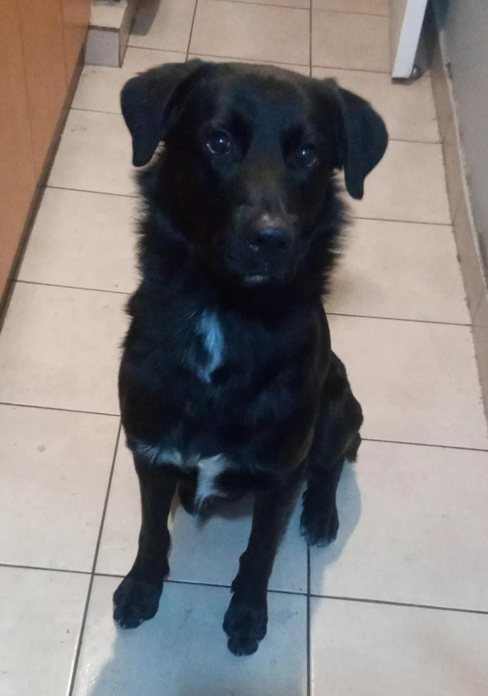

Curriculim Vitae

Jean Rojas Ramos
Resumen
Jean Rojas 23 años, estudiante de Ing. de ejecución Informatica en Usach y aficionado por los deportes de contacto,
viviendo actualmente en Santiago con Black(mascota), cursando un bootcamp de fullstack en Desafío Latam para poder complementar la formación academica que lleva actualmente.
Objetivos
-
Aprender los contenidos de cada unidad.
-
Certificarme en cada unidad.
-
Trabajar con lo obtenido al final del curso.
Datos Personales
-
Nombre: Jean Paul Rojas Ramos
-
Lugar de Nacimiento: Providencia (Santiago,Chile)
-
Fecha de Nacimiento: 22 de Julio del 2000
Formación
- Enseñanza basica: Colegio Ernesto Yañez Rivera
- Enseñanza media: Liceo Dario Salas
- Enseñanza superior: Universidad de Santiago (Actual)
Habilidades